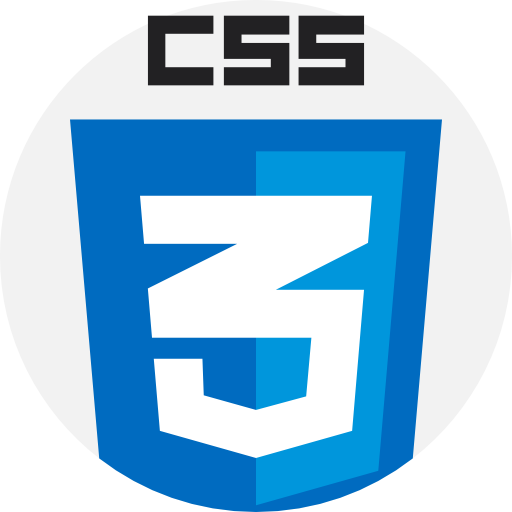
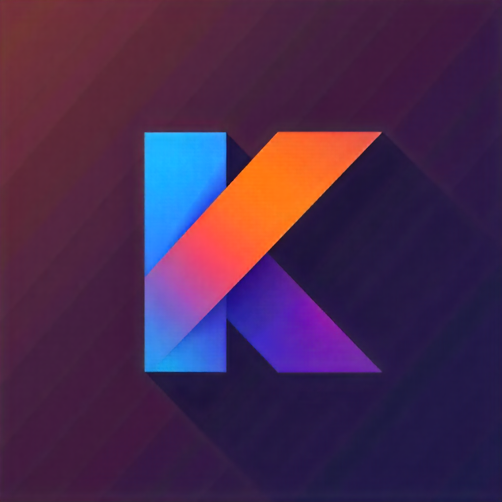
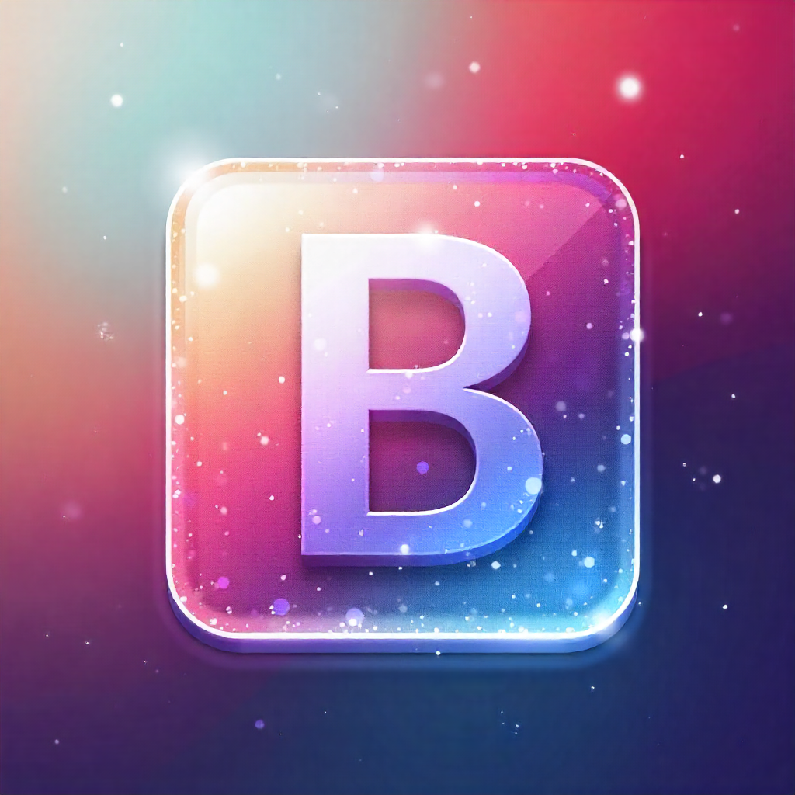
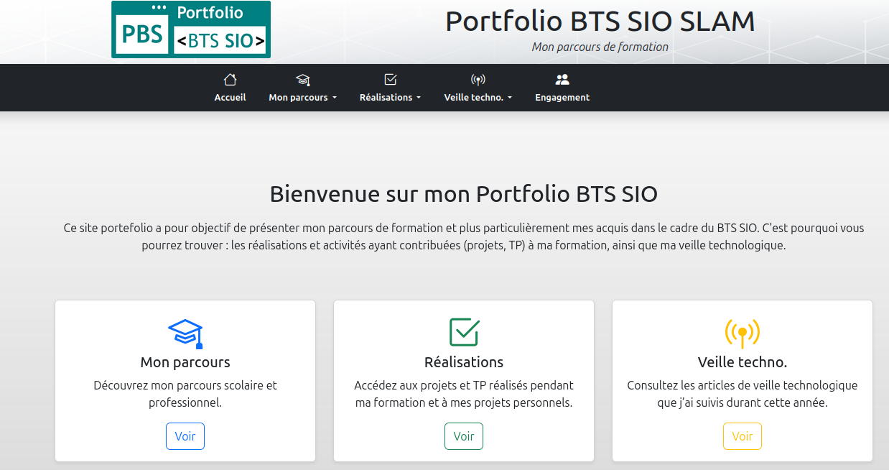
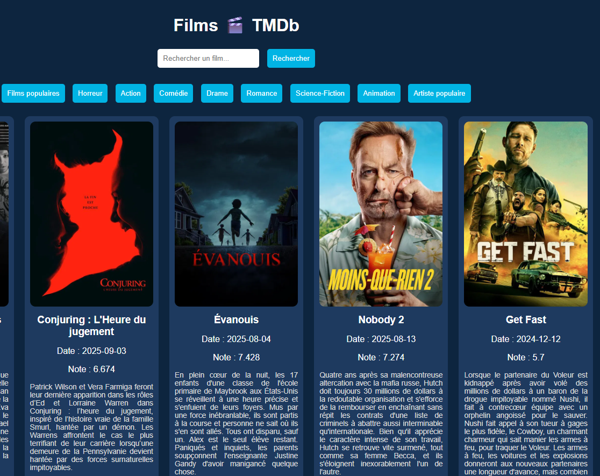
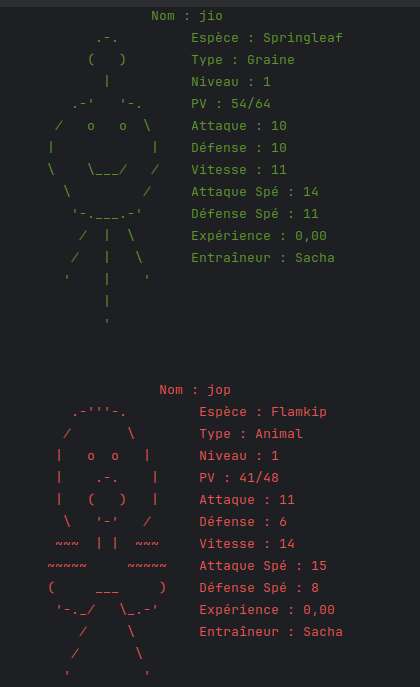
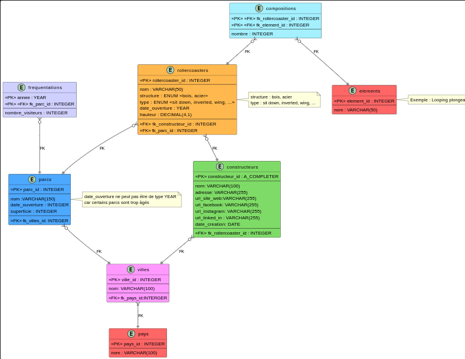
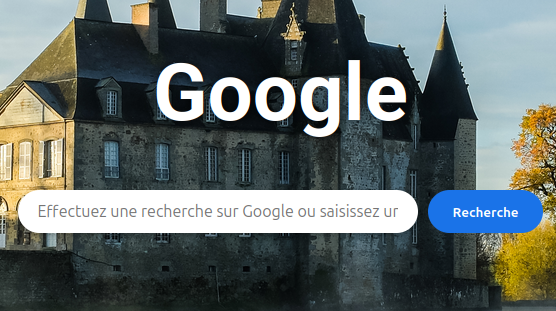

Langages & Frameworks
Langages
 HTML5
HTML5

CSS3 JavaScript
JavaScript
 Python
Python
 PHP
PHP

KotlinFrameworks / Librairies
.png) Angular
Angular

BootstrapJe m’appelle Josue Kialengela-Tazi, étudiant en 2ᵉ Année de BTS SIO, option SLAM (Solutions Logicielles et Applications Métiers).
Passionné par le développement web et mobile, j’aime concevoir des sites et applications intuitives, performantes et adaptées aux besoins réels des utilisateurs.
Je maîtrise plusieurs langages de programmation, dont HTML, CSS, JavaScript, PHP, Python, Kotlin, SQL . Je suis quelqu'un de curieux, rigoureux et déterminé, je suis toujours motivé à relever de nouveaux défis techniques et à apprendre de nouvelles technologies.
Actuellement, je suis à la recherche d’une alternance en Bac+3, dans le développement web ou en UX/UI design, avec comme préférence pour le front-end.
Je prévois de poursuivre mes études en troisième année en alternance dans le développement web en Full stack ou Front-end. Je suis donc également en recherche active d’une entreprise pour m’accompagner dans cette alternance à partir de la rentrée prochaine.
HTML5

CSS3
JavaScript
Python
PHP

Kotlin
Angular

Bootstrap SQL
SQL
 MariaDB
MariaDB
 GitHub
GitHub
 VS Code
VS Code
 IntelliJ IDEA
IntelliJ IDEA
 Figma
Figma
 PrestaShop
PrestaShop
 Shopify
Shopify
Le BTS Services Informatiques aux Organisations (SIO) est une formation orientée vers les métiers de l’informatique et du développement. Lors de la première année, j’ai étudié les bases communes aux deux spécialités : SLAM (Solutions Logicielles et Applications Métiers) et SISR (Solutions d’Infrastructure, Systèmes et Réseaux). Cette année m’a permis d’acquérir des connaissances en réseau, systèmes informatiques, développement web et bases de données.
En deuxième année, je me suis spécialisé dans l’option SLAM, qui est axée sur le développement d’applications. J’ai réalisé plusieurs projets de développement en utilisant différents langages et technologies comme HTML, CSS, JavaScript, PHP, SQL et Python. Ces projets m’ont permis de renforcer mes compétences en conception d’applications web, gestion de bases de données et développement logiciel.
Première année de licence orientée vers les bases scientifiques et technologiques de l’ingénierie. Cette formation m’a permis de développer des compétences en mathématiques, informatique et logique scientifique, tout en découvrant différentes approches liées aux sciences de l’ingénieur.
Baccalauréat général avec spécialités Mathématiques et Physique-Chimie. Cette formation m’a permis de développer des compétences en logique, analyse et résolution de problèmes, qui sont des bases importantes pour les études en informatique.
Prestashop
Shopify
Wordpress
Excel
HTML
Css
Javascript
Boostrap

J’ai créé ce portfolio statique dans le cadre de ma formation en BTS SIO. Il utilise Bootstrap 5 pour la mise en page et Pelican pour la génération statique. Le projet présente mes compétences, projets et expériences de manière professionnelle, et inclut une navigation fluide et responsive.

Application web pour rechercher et découvrir des films via l’API TMDb. Fonctionnalités : affichage des films populaires, tri par genre, recherche d’artistes. L’interface est responsive et dynamique, avec affichage des affiches, notes et résumés en temps réel.

Application web pour rechercher des chansons ou artistes, avec intégration de vidéos YouTube. Interface intuitive et responsive pour écouter et découvrir facilement de la musique, avec possibilité de créer des playlists temporaires directement dans le navigateur.

Kotlin Monsters est un jeu d’aventure en Kotlin, inspiré de Pokémon. Le joueur capture des monstres, les fait évoluer, combat d’autres dresseurs et collectionne des badges en explorant différentes zones du jeu.

Projet de base de données sur les parcs et montagnes russes d’Europe. Comprend la conception UML, création SQL et gestion via MariaDB. Permet de suivre les statistiques des attractions et organiser les données par pays et type de manège.

Développement d’une reproduction du moteur de recherche Google en HTML et CSS. Ce projet met l’accent sur la précision du design, la simplicité de l’interface et l’ergonomie utilisateur. Il intègre une barre de recherche fonctionnelle connectée à Google, ainsi que des liens vers des services externes comme Gmail et YouTube. Ce travail m’a permis de renforcer mes compétences en intégration web et en reproduction d’interfaces modernes.

Conception d’une application front-end en Angular, pensée comme une base robuste pour le développement d’interfaces web modernes. Le projet met en avant une architecture modulaire, une gestion efficace des routes et une préparation à l’intégration d’API. Il démontre ma capacité à structurer un projet scalable et à développer des applications performantes. Cette réalisation m’a permis de consolider mes compétences en Angular et en développement d’applications web dynamiques.
N'hésitez pas à me contacter